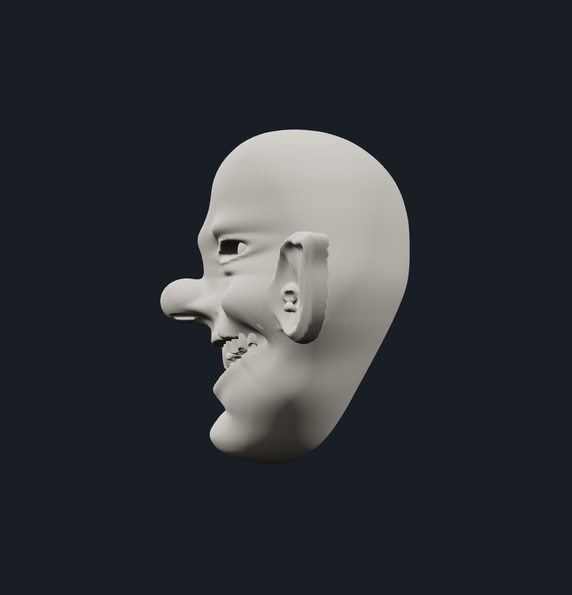
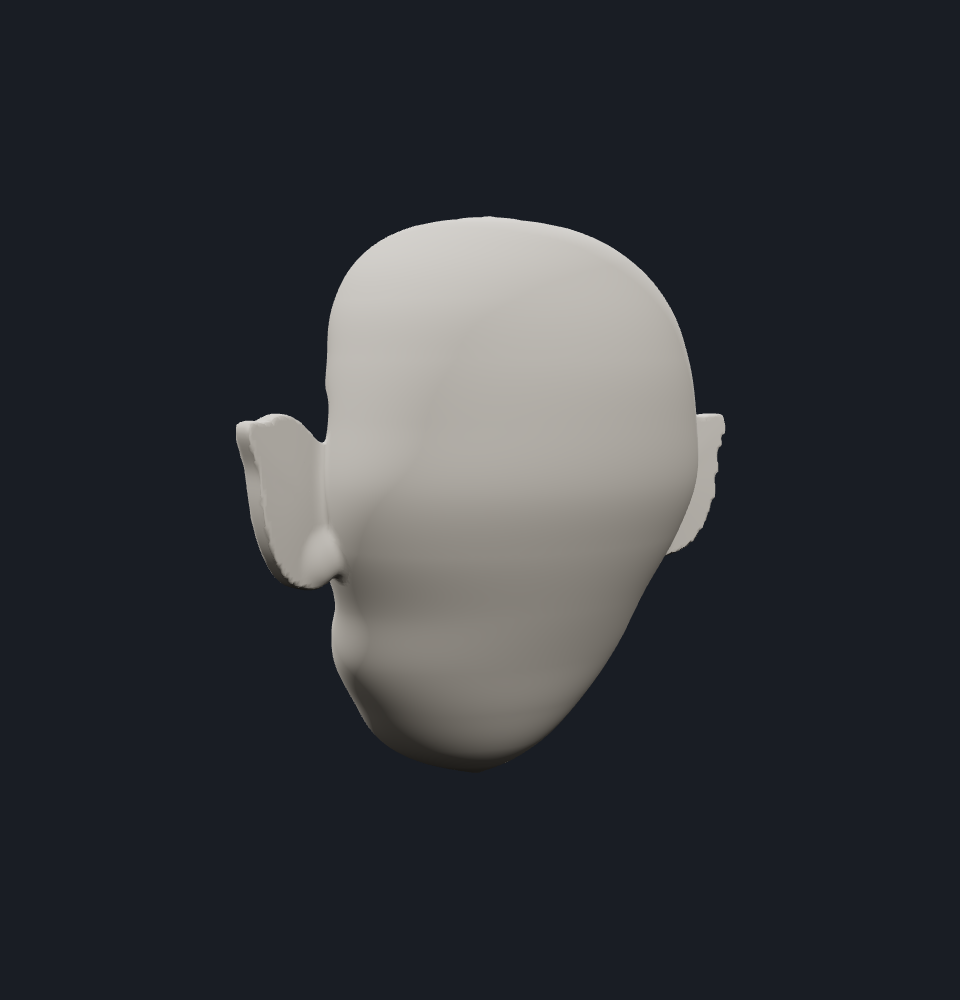
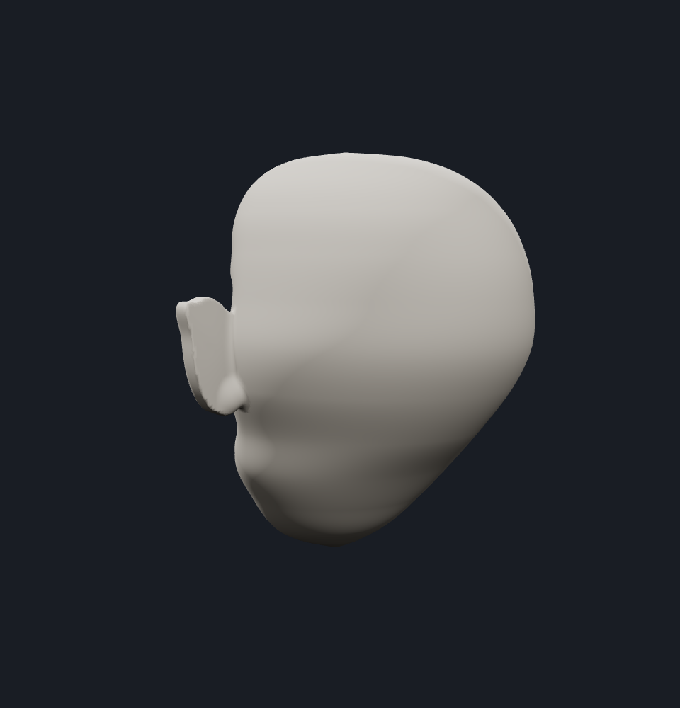
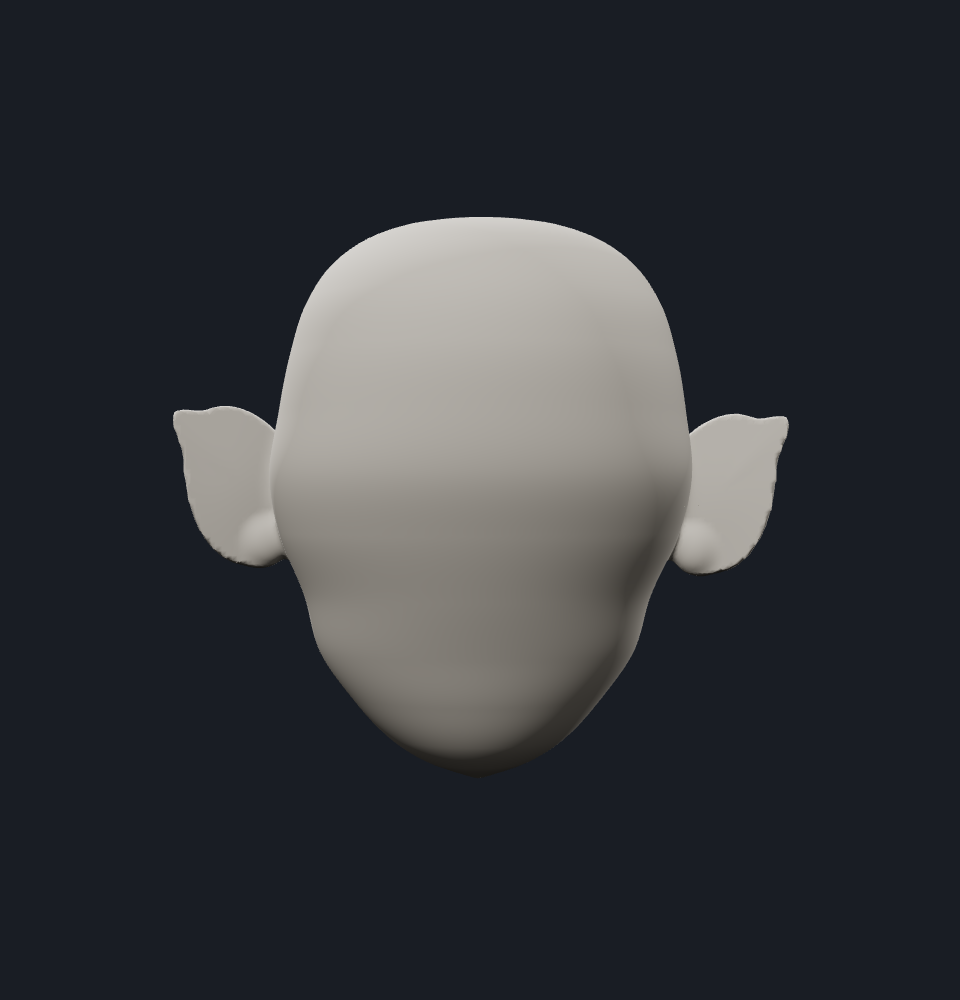
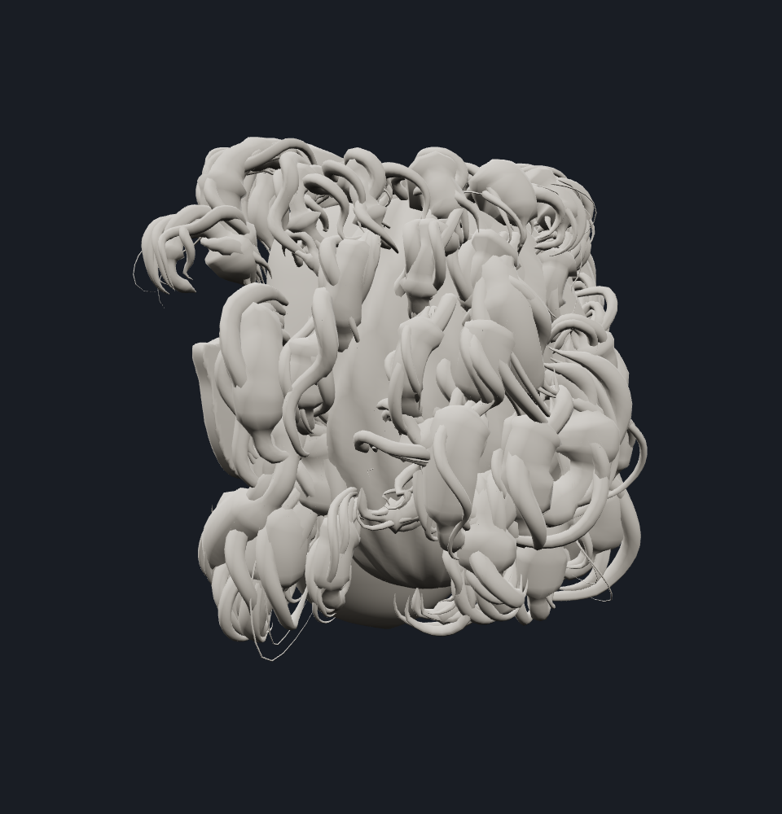
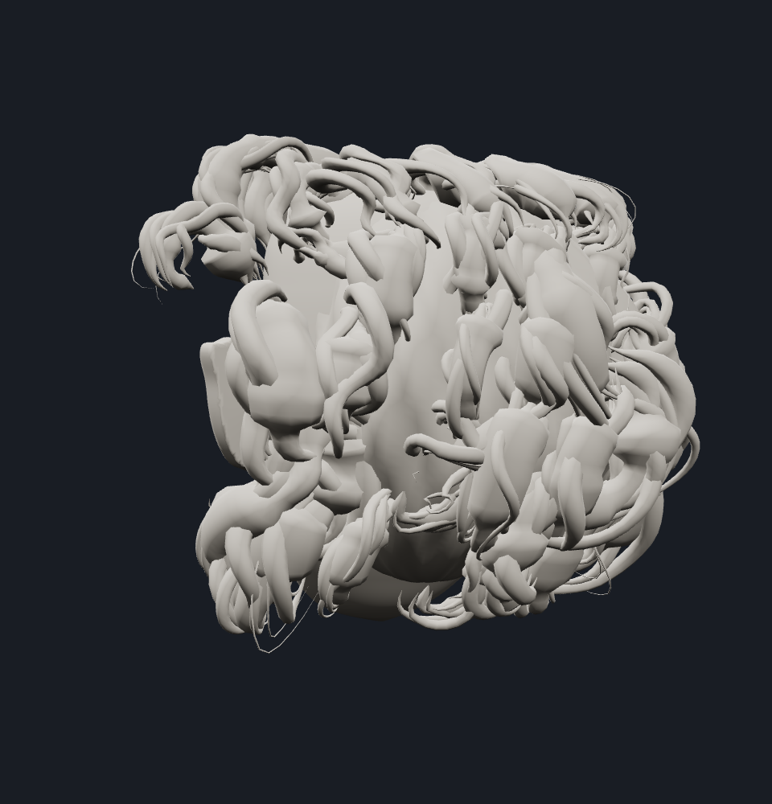
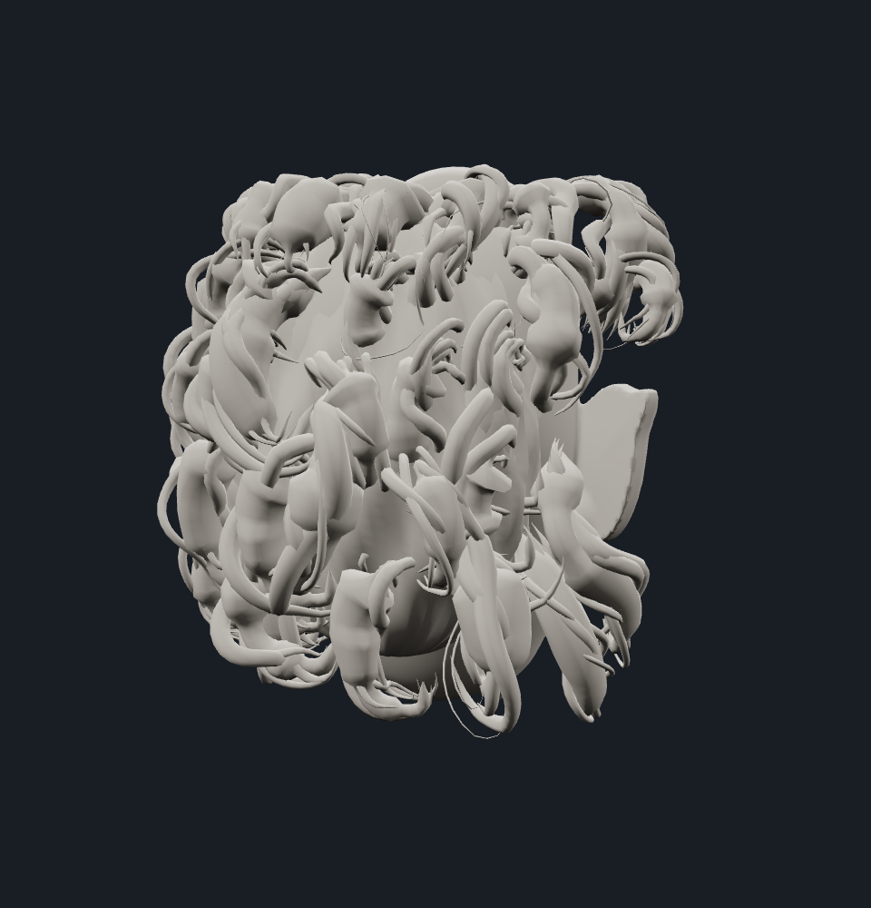
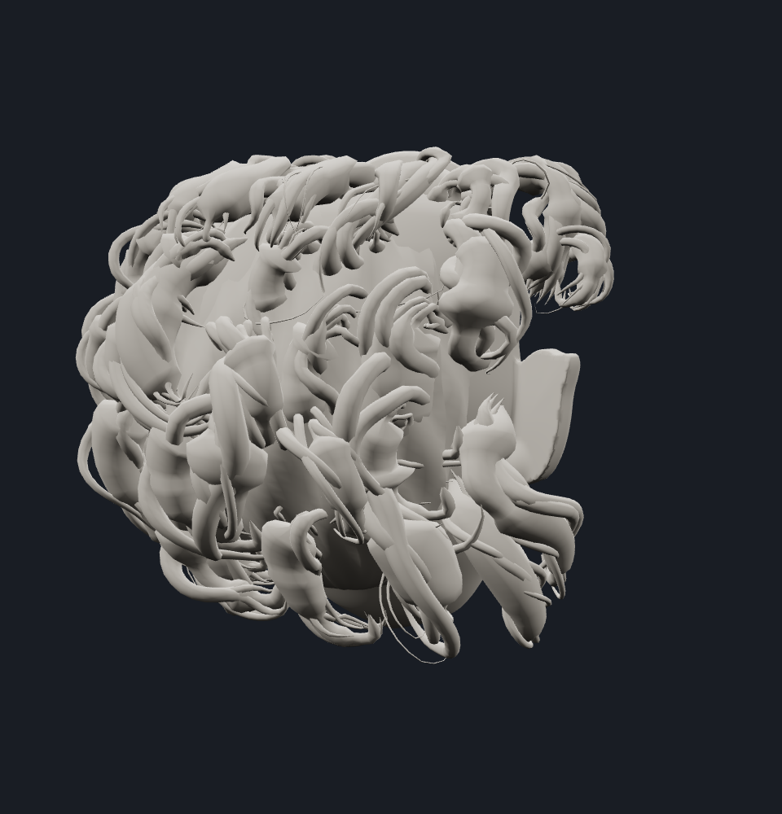

Open the interactive comparison viewer · Preserved approved viewer
Same sculpt · anatomical refinement
The approved 28900d9 foundation is preserved on the left; the targeted refinement is on the right. Both use the same neutral clay material, white studio lights, camera positions and framing. Tap an image for full resolution.
Start with the hair-hidden skull views to judge cranial depth. Then inspect the lip borders, reduced chin projection, cartilage folds and seated eyeballs. The cheekbones, wide grin, dental arrangement, pointed ears and irregular groom design remain the foundation. The interactive viewer lets you switch versions without changing the camera.
This is a static anatomical review. Production FREAKSHOW is unchanged. No animation, audio response or NPR work is included; artistic approval of the refinement remains pending.
Front


Skull profile · hair hidden



Rear skull · hair hidden




Back of skull · hair hidden



Left three-quarter


Right three-quarter


Left profile


Right profile


Rear three-quarter




Left rear three-quarter




Back


Crown


Underside


Lips and dental anatomy


Seated eyes and eyelids


Ear folds and attachment


Nasal anatomy


Preserved groom design


Additional inspection


Mobile review
WebKit with iPhone 13 viewport and controls

Use “Compare sculpt” in the live viewer to switch between the approved and refined versions at the same angle. The first approved-model load generates its geometry; subsequent switches reuse it. Both remain fully orbitable and zoomable.
Cloud WebKit emulation verifies layout and interaction. Physical iPhone performance, thermals and pinch behavior still require device review.
Geometry and browser verification
The checks cover surface connectivity, manifold edges, spherical globes, unchanged dental geometry, preserved cheek projection, increased posterior skull depth and working browser controls. They do not establish artistic quality.
Read the check report